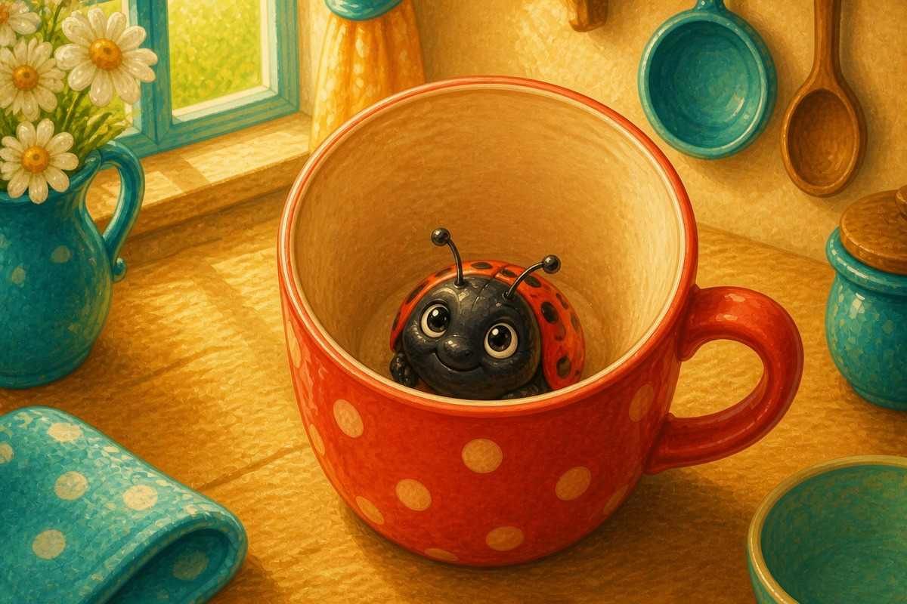
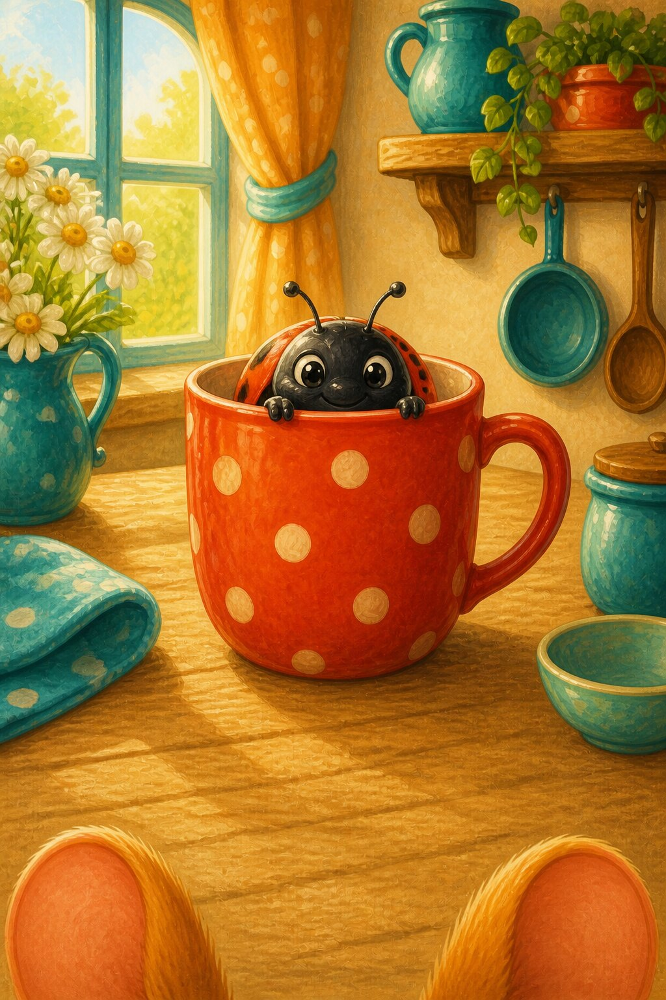
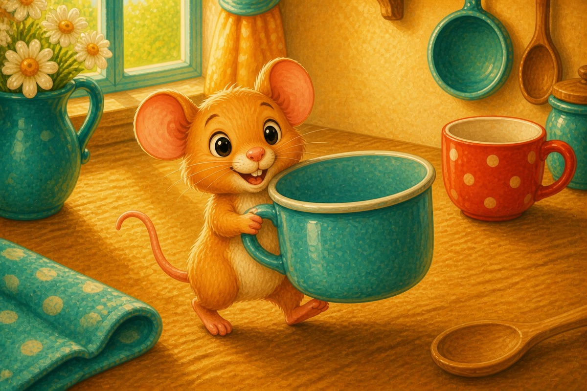
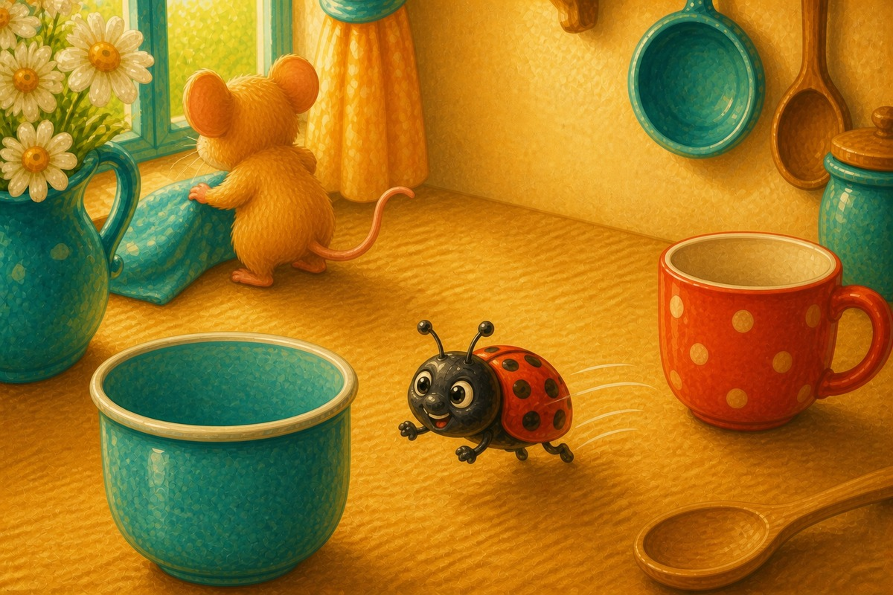
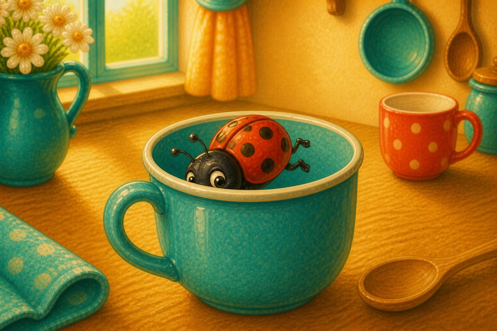
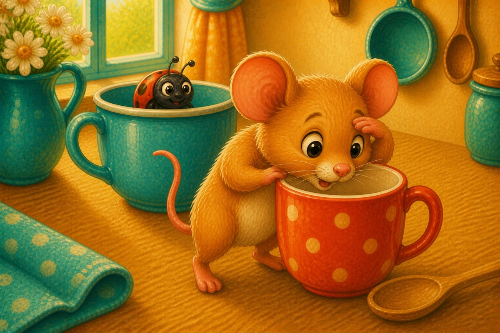
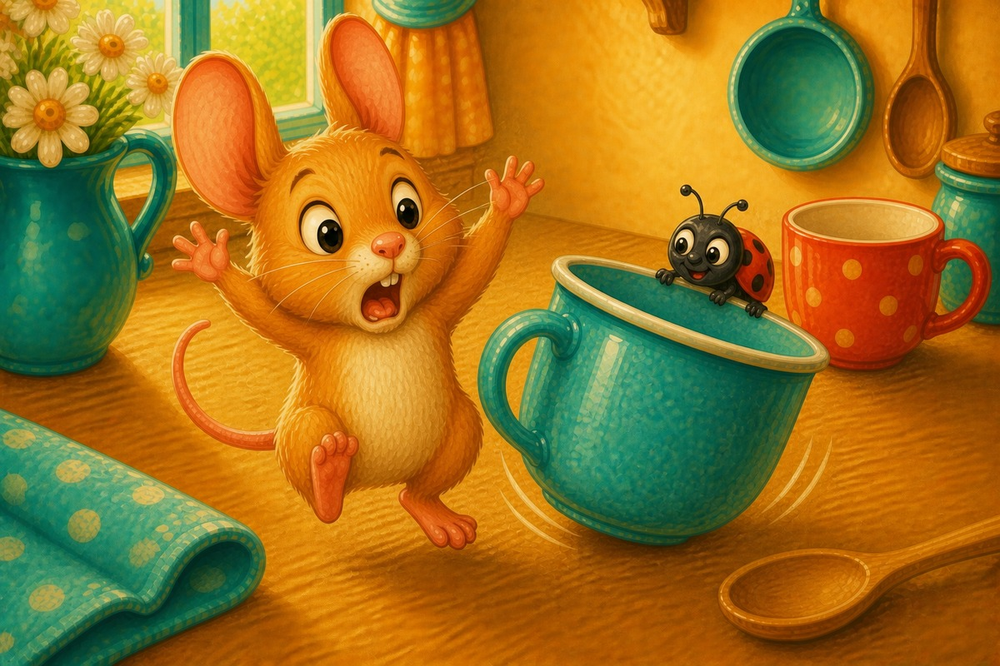
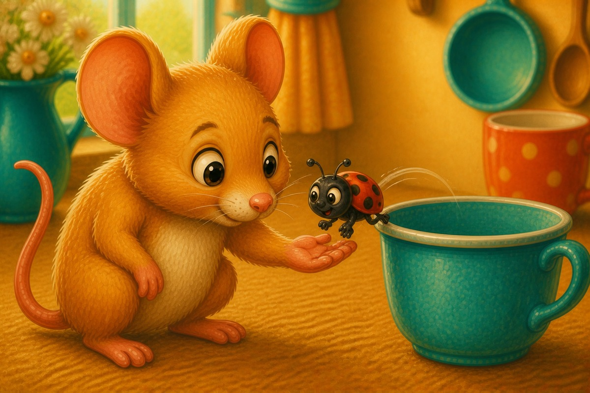
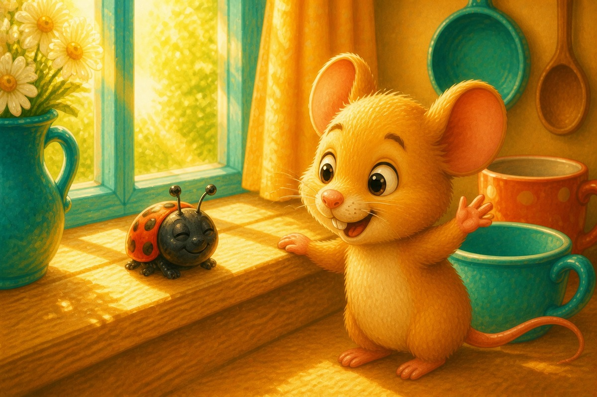

Page 1 of 8
A bug sat in a mug.
Meet the short U sound. A 8-page decodable story focusing on Short U · g o u l f b.


A bug sat in a mug.

Pip got a big cup.

The bug ran to the cup.

The bug hid in the cup!

Pip did not spot the bug.

Bug! Bug! Bug!

Pip let the bug hop up.

The bug sat in the sun. Pip had fun.
Stage 3 adds g, o, u, l, f and b, which unlocks short O and short U. The word spot starts with two consonants run together — sound both, then blend, rather than treating sp as one sound. Short U is the hardest short vowel to hear, so it helps to say bug, mug, cup, sun and fun aloud together before opening the book and again at the end.
SnackPack ABC & Alphabet continues with letter activities, read-together stories and more early phonics practice.